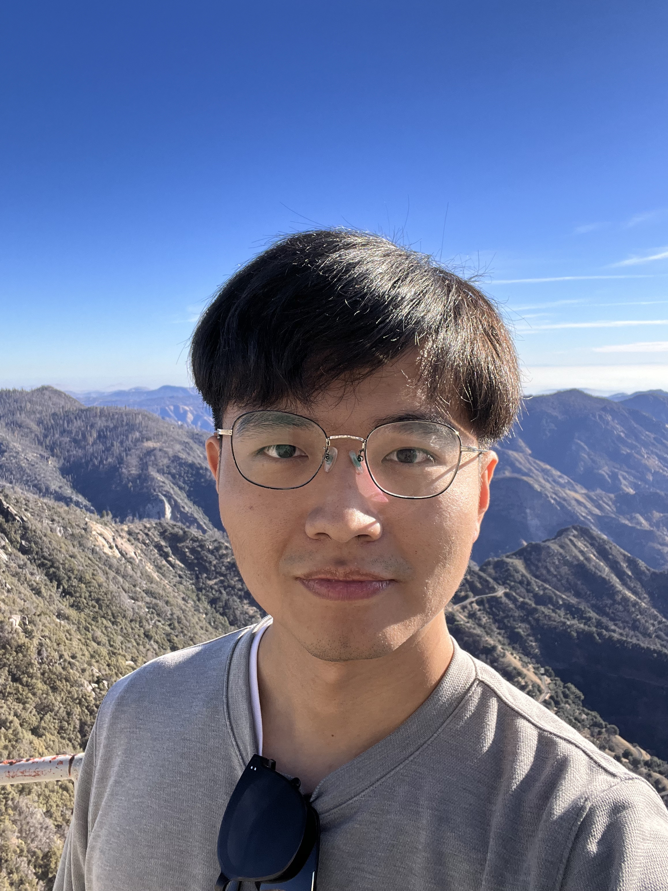

✦ I am graduating in December 2026 and looking for research positions in both academia and industry.
I am a PhD Candidate in Electrical and Computer Engineering at the University of California San Diego, advised by Prof. Yang Zheng. I obtained my MS in Communication Engineering from National Taiwan University, advised by Prof. See-May Phoong, and my BS in ECE from National Yang Ming Chiao Tung University.
I work on prediction, planning, and control for dynamical systems under uncertainty. The question underlying my research is how closed-loop decision making stays reliable when dynamics are learned or partially observed, predictions are imperfect, and disturbances need not follow a stochastic model.
Online prediction and nonstochastic control I design sequential prediction and control algorithms for partially observed systems under adversarial disturbances via regret-minimizing approaches.
Model predictive control and model-based RL I study how receding-horizon planners behave in closed loop under finite samples, imperfect models, and incomplete information: sampling-based methods such as CEM and MPPI, and data-driven MPC for Koopman-linearizable systems. I want to know when sharper prediction or better optimization actually yields better long-horizon control.
Policy optimization for optimal and robust control I study the nonconvex landscapes of LQR, \( \mathcal{H}_\infty \), and mixed \( \mathcal{H}_2/\mathcal{H}_\infty \) control, and the hidden convex structure behind them. With collaborators, I developed Extended Convex Lifting, a unified framework bridging classical Riccati- and LMI-based synthesis with policy optimization.
I also studied reward-free exploration in reinforcement learning early in my PhD, and signal processing for communication systems during my MS.
I was an Audio R&D Intern at Qualcomm in Summer 2025, working on active noise cancellation algorithms for earbuds. I combined ideas from optimization, robust control, and signal processing to develop practical solutions.
Teaching Assistant at UCSD:
Teaching Assistant at NTU: